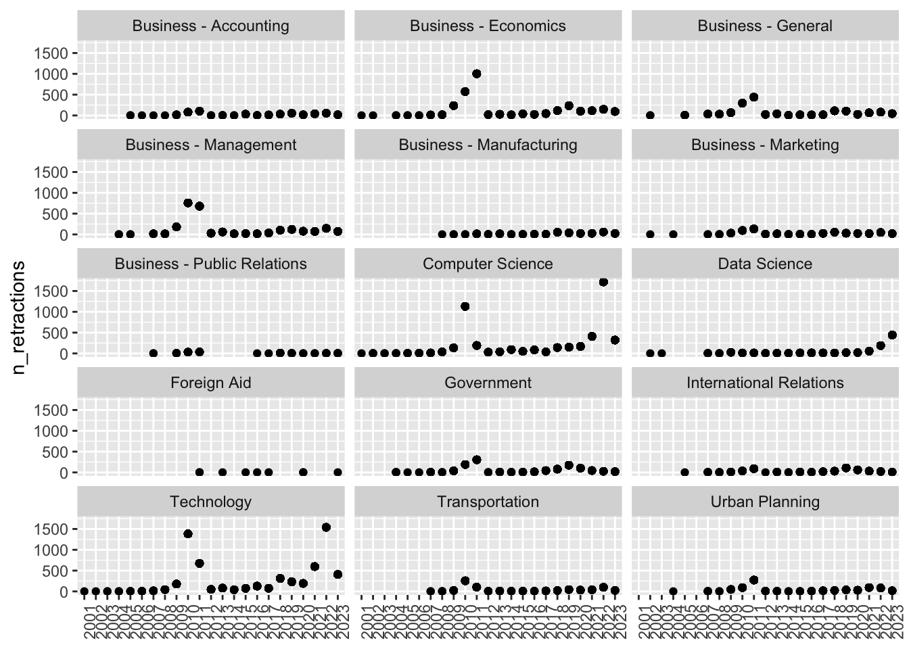

library(dplyr)
Attaching package: 'dplyr'The following objects are masked from 'package:stats':
filter, lagThe following objects are masked from 'package:base':
intersect, setdiff, setequal, unionlibrary(tidyr)
library(ggplot2)July 29, 2024
This document downloads and summarizes some of the data from the newly public Retraction Watch database.
This site: https://www.crossref.org/blog/news-crossref-and-retraction-watch/ describes some information about how to access the Retraction Watch database.
if (params$use_cached == FALSE) {
url <- "https://api.labs.crossref.org/data/retractionwatch?rog1@psu.edu"
rw <- readr::read_csv(url)
if (params$cache_rw) readr::write_csv(rw, "csv/retraction-watch.csv")
} else {
rw <- readr::read_csv("csv/retraction-watch.csv", show_col_types = FALSE)
}
str(rw)spc_tbl_ [47,305 × 20] (S3: spec_tbl_df/tbl_df/tbl/data.frame)
$ Record ID : num [1:47305] 47657 47653 47650 47649 47648 ...
$ Title : chr [1:47305] "Common risk factors in the cross-section of corporate bond returns" "A new perspective on structural and morphological properties of carbon nanotubes synthesized by Plasma Enhanced"| __truncated__ "The Effects of Percent and Position of Nitrogen Atoms on Electronic and Thermoelectric Properties of Graphene Nanoribbons" "Synthesis of Carbon Nanotube and Zinc Oxide (CNTâ\u0080\u0093ZnO) Nanocomposite" ...
$ Subject : chr [1:47305] "(B/T) Business - Economics;" "(PHY) Engineering - Chemical;(PHY) Materials Science;(PHY) Nanotechnology;" "(PHY) Engineering - Chemical;(PHY) Materials Science;(PHY) Nanotechnology;" "(PHY) Engineering - Chemical;(PHY) Materials Science;(PHY) Nanotechnology;" ...
$ Institution : chr [1:47305] "McDonough School of Business, Georgetown University, 3700 O St., Washington, DC, 20057, USA;" "Plasma Physics Research Center, Science and Research Branch, Islamic Azad University, Tehran, Iran; Department "| __truncated__ "Plasma Physics Research Center, Science and Research Branch, Islamic Azad University, Tehran, Iran; Department "| __truncated__ "Department of Physics, Imam Khomeini University, Qazvin, Iran; Department of Physics, Shahed University, Tehran"| __truncated__ ...
$ Journal : chr [1:47305] "Journal of Financial Economics" "Results in Physics" "Journal of Inorganic and Organometallic Polymers and Materials" "Journal of Inorganic and Organometallic Polymers and Materials" ...
$ Publisher : chr [1:47305] "Elsevier" "Elsevier" "Springer" "Springer" ...
$ Country : chr [1:47305] "United States" "Iran" "Iran" "Iran" ...
$ Author : chr [1:47305] "Jennie Bai;Turan G Bali;Quan Wen" "A Salar Elahi;K Mikaili Agah;M Ghoranneviss" "A Jafari;M Ghoranneviss;M Gholami;A Salar Elahi;A Kavosi Ghafi" "P Farazmand;M Khanlary;S Fehli;A Salar Elahi;M Ghoranneviss" ...
$ URLS : chr [1:47305] NA "https://retractionwatch.com/?s=A+Salar+Elahi;https://retractionwatch.com/?s=M+Ghoranneviss" "https://retractionwatch.com/?s=A+Salar+Elahi;https://retractionwatch.com/?s=M+Ghoranneviss" "https://retractionwatch.com/?s=A+Salar+Elahi;https://retractionwatch.com/?s=M+Ghoranneviss" ...
$ ArticleType : chr [1:47305] "Research Article;" "Research Article;" "Research Article;" "Research Article;" ...
$ RetractionDate : chr [1:47305] "2/13/2019 0:00" "11/13/2020 0:00" "6/16/2023 0:00" "4/7/2023 0:00" ...
$ RetractionDOI : chr [1:47305] "10.1016/j.jfineco.2018.08.002" "10.1016/j.rinp.2020.103557" "10.1007/s10904-023-02760-3" "10.1007/s10904-023-02641-9" ...
$ RetractionPubMedID : num [1:47305] 0 0 0 0 0 ...
$ OriginalPaperDate : chr [1:47305] "8/16/2018 0:00" "4/5/2017 0:00" "8/2/2016 0:00" "2/20/2015 0:00" ...
$ OriginalPaperDOI : chr [1:47305] "10.1016/j.jfineco.2018.08.002" "10.1016/j.rinp.2017.01.043" "10.1007/s10904-016-0430-7" "10.1007/s10904-015-0196-3" ...
$ OriginalPaperPubMedID: num [1:47305] 0 0 0 0 0 ...
$ RetractionNature : chr [1:47305] "Retraction" "Retraction" "Retraction" "Retraction" ...
$ Reason : chr [1:47305] "+Error in Data;+Error in Results and/or Conclusions;" "+Duplication of Article;" "+Concerns/Issues About Authorship;+Concerns/Issues with Peer Review;+Fake Peer Review;+False/Forged Authorship;" "+Concerns/Issues About Authorship;+Concerns/Issues with Peer Review;+Fake Peer Review;" ...
$ Paywalled : chr [1:47305] "No" "No" "No" "No" ...
$ Notes : chr [1:47305] "date of retraction unknown, html page overwrite; see also: https://www.sciencedirect.com/science/article/pii/S0304405X23001393" NA NA NA ...
- attr(*, "spec")=
.. cols(
.. `Record ID` = col_double(),
.. Title = col_character(),
.. Subject = col_character(),
.. Institution = col_character(),
.. Journal = col_character(),
.. Publisher = col_character(),
.. Country = col_character(),
.. Author = col_character(),
.. URLS = col_character(),
.. ArticleType = col_character(),
.. RetractionDate = col_character(),
.. RetractionDOI = col_character(),
.. RetractionPubMedID = col_double(),
.. OriginalPaperDate = col_character(),
.. OriginalPaperDOI = col_character(),
.. OriginalPaperPubMedID = col_double(),
.. RetractionNature = col_character(),
.. Reason = col_character(),
.. Paywalled = col_character(),
.. Notes = col_character()
.. )
- attr(*, "problems")=<externalptr> rw_l <- rw |>
separate_longer_delim(Subject, delim=";") |>
mutate(field_type = stringr::str_extract(Subject, "\\([A-Z/]+\\)")) |>
mutate(field_type = stringr::str_remove(field_type, "\\(")) |>
mutate(field_type = stringr::str_remove(field_type, "\\)")) |>
mutate(retraction_year = stringr::str_extract(RetractionDate, "[0-9]{4}")) |>
mutate(field = stringr::str_remove(Subject, "^\\([A-Z/]+\\) "))field_type
B/T BLS ENV HSC HUM PHY SOC
22774 38958 3980 27844 1625 16464 8778 rw_l_2000 <- rw_l |>
filter(as.numeric(retraction_year) > 2000)
xtabs(~ field_type + retraction_year, rw_l_2000) retraction_year
field_type 2001 2002 2003 2004 2005 2006 2007 2008 2009 2010 2011 2012 2013
B/T 3 10 5 16 26 18 121 162 999 4930 4057 193 329
BLS 37 212 136 144 165 256 326 435 593 921 1936 987 1185
ENV 5 4 1 7 3 20 16 23 75 640 984 70 71
HSC 28 65 65 146 113 190 214 348 547 685 1238 1160 1306
HUM 1 4 0 9 1 4 10 13 27 149 176 23 23
PHY 11 44 65 51 55 96 125 135 438 4100 1975 470 581
SOC 6 3 3 8 10 14 25 51 180 1226 1106 130 185
retraction_year
field_type 2014 2015 2016 2017 2018 2019 2020 2021 2022 2023
B/T 203 289 339 364 1098 1348 881 1608 4216 1518
BLS 1078 1838 2095 1868 2281 2194 3952 6027 5583 3870
ENV 86 118 146 133 161 222 125 674 243 132
HSC 1040 1495 1853 1608 1543 1985 3018 2167 3281 3243
HUM 23 62 34 61 121 230 205 158 141 90
PHY 427 606 592 698 1062 815 970 1273 1214 597
SOC 121 155 184 447 655 1098 691 755 1032 671rw_l_2000 |>
group_by(retraction_year, field_type) |>
mutate(n_retractions = n()) |>
ggplot() +
aes(retraction_year, n_retractions) +
facet_wrap(facets = vars(field_type), ncol = 3) +
geom_point() +
theme(axis.text.x = element_text(angle=90), axis.title.x = element_blank()) rw_l_2000 |>
filter(field_type == "B/T") |>
group_by(retraction_year, field) |>
mutate(n_retractions = n()) |>
ggplot() +
aes(retraction_year, n_retractions) +
facet_wrap(facets = vars(field), ncol = 3) +
geom_point() +
theme(axis.text.x = element_text(angle=90), axis.title.x = element_blank()) 
plot_by_subfield <- function(ft = "B/T", df = rw_l) {
df |>
filter(!is.na(field_type)) |>
filter(field_type == {{ft}}) |>
group_by(retraction_year, field) |>
mutate(n_retractions = n()) |>
ggplot() +
aes(retraction_year, n_retractions) +
facet_wrap(facets = vars(field), ncol = 3) +
geom_point() +
theme(axis.text.x = element_text(angle=90), axis.title.x = element_blank()) +
ggtitle("Retractions 2000-present")
} rw_r <- rw |>
separate_longer_delim(Reason, delim=";") |>
mutate(reason = stringr::str_remove(Reason, "\\+")) |>
separate_longer_delim(Subject, delim=";") |>
mutate(field_type = stringr::str_extract(Subject, "\\([A-Z/]+\\)")) |>
mutate(field_type = stringr::str_remove(field_type, "\\(")) |>
mutate(field_type = stringr::str_remove(field_type, "\\)"))
reasons_sum <- rw_r |>
filter(!is.na(field_type)) |>
group_by(field_type, reason) |>
summarize(n = n()) |>
arrange(desc(n))`summarise()` has grouped output by 'field_type'. You can override using the
`.groups` argument.Top retraction reasons by field_type.
field_type.
| field_type | reason | n |
|---|---|---|
| BLS | 38958 | |
| HSC | 27844 | |
| B/T | 22774 | |
| PHY | 16464 | |
| B/T | Notice - Limited or No Information | 10415 |
| BLS | Duplication of Image | 9499 |
| BLS | Concerns/Issues About Data | 8779 |
| SOC | 8778 | |
| B/T | Investigation by Journal/Publisher | 8029 |
| HSC | Concerns/Issues About Data | 6375 |
| BLS | Unreliable Results | 6304 |
| HSC | Investigation by Journal/Publisher | 6152 |
| BLS | Investigation by Journal/Publisher | 6122 |
| PHY | Notice - Limited or No Information | 6088 |
| BLS | Investigation by Third Party | 5673 |
| B/T | Date of Retraction/Other Unknown | 5346 |
| B/T | Breach of Policy by Author | 5343 |
| BLS | Paper Mill | 5272 |
| B/T | Fake Peer Review | 4952 |
| BLS | Investigation by Company/Institution | 4566 |
| HSC | Investigation by Third Party | 4314 |
| BLS | Concerns/Issues About Image | 4283 |
| HSC | Investigation by Company/Institution | 4081 |
| BLS | Original Data not Provided | 4026 |
| ENV | 3980 | |
| HSC | Unreliable Results | 3822 |
| BLS | Manipulation of Images | 3039 |
| HSC | Misconduct by Author | 2902 |
| SOC | Notice - Limited or No Information | 2758 |
| BLS | Error in Image | 2740 |
| PHY | Investigation by Journal/Publisher | 2727 |
| BLS | Notice - Limited or No Information | 2628 |
| HSC | Misconduct - Official Investigation/Finding | 2609 |
| HSC | Concerns/Issues about Referencing/Attributions | 2544 |
| BLS | Author Unresponsive | 2518 |
| B/T | Unreliable Results | 2468 |
| HSC | Notice - Limited or No Information | 2355 |
| BLS | Unreliable Data | 2340 |
| SOC | Investigation by Journal/Publisher | 2324 |
| B/T | Concerns/Issues about Referencing/Attributions | 2309 |
| PHY | Date of Retraction/Other Unknown | 2302 |
| HSC | Concerns/Issues with Peer Review | 2274 |
| B/T | Withdrawal | 2264 |
| BLS | Error in Data | 2244 |
| B/T | Rogue Editor | 2242 |
| HSC | Date of Retraction/Other Unknown | 2173 |
| BLS | Misconduct by Author | 2165 |
| HSC | Concerns/Issues About Results | 2104 |
| HSC | Withdrawal | 2082 |
| BLS | Falsification/Fabrication of Data | 2056 |
| HSC | Duplication of Article | 1983 |
| BLS | Misconduct - Official Investigation/Finding | 1960 |
| HSC | Lack of IRB/IACUC Approval | 1939 |
| HSC | Falsification/Fabrication of Data | 1904 |
| PHY | Breach of Policy by Author | 1858 |
| BLS | Concerns/Issues About Results | 1852 |
| BLS | Upgrade/Update of Prior Notice | 1839 |
| BLS | Results Not Reproducible | 1756 |
| B/T | Euphemisms for Plagiarism | 1752 |
| BLS | Duplication of Article | 1660 |
| BLS | Fake Peer Review | 1646 |
| HUM | 1625 | |
| PHY | Duplication of Article | 1580 |
| HSC | Fake Peer Review | 1558 |
| HSC | Error in Data | 1544 |
| BLS | Updated to Retraction | 1512 |
| BLS | Date of Retraction/Other Unknown | 1505 |
| HSC | Plagiarism of Article | 1479 |
| PHY | Withdrawal | 1456 |
| HSC | Duplication of Image | 1444 |
| BLS | Concerns/Issues About Authorship | 1434 |
| B/T | Concerns/Issues with Peer Review | 1432 |
| BLS | Objections by Third Party | 1418 |
| BLS | Error in Results and/or Conclusions | 1357 |
| BLS | Duplication of Data | 1326 |
| ENV | Notice - Limited or No Information | 1322 |
| BLS | Falsification/Fabrication of Image | 1321 |
| B/T | Plagiarism of Text | 1316 |
| SOC | Date of Retraction/Other Unknown | 1313 |
| PHY | Fake Peer Review | 1303 |
| BLS | Withdrawal | 1272 |
| SOC | Breach of Policy by Author | 1253 |
| SOC | Fake Peer Review | 1226 |
| BLS | Euphemisms for Plagiarism | 1201 |
| BLS | Plagiarism of Article | 1193 |
| BLS | Error in Analyses | 1188 |
| BLS | Error in Methods | 1173 |
| HSC | Euphemisms for Plagiarism | 1160 |
| B/T | Investigation by Third Party | 1155 |
| SOC | Euphemisms for Plagiarism | 1153 |
| B/T | Paper Mill | 1149 |
| B/T | Concerns/Issues About Data | 1146 |
| B/T | Duplication of Article | 1097 |
| PHY | Unreliable Results | 1092 |
| HSC | Retract and Replace | 1090 |
| SOC | Plagiarism of Text | 1067 |
| HSC | Ethical Violations by Author | 1057 |
| HSC | Error in Analyses | 1051 |
| PHY | Plagiarism of Article | 1033 |
| PHY | Concerns/Issues About Data | 1017 |
| HSC | Error in Methods | 1005 |
| HSC | Concerns/Issues About Image | 994 |
| ENV | Investigation by Journal/Publisher | 993 |
| HSC | Plagiarism of Text | 988 |
| BLS | Concerns/Issues about Referencing/Attributions | 984 |
| HSC | Author Unresponsive | 971 |
| B/T | Plagiarism of Article | 965 |
| BLS | Plagiarism of Text | 941 |
| HSC | Unreliable Data | 929 |
| HSC | Legal Reasons/Legal Threats | 918 |
| SOC | Withdrawal | 893 |
| HSC | Concerns/Issues About Authorship | 882 |
| HSC | Error in Results and/or Conclusions | 879 |
| PHY | Concerns/Issues about Referencing/Attributions | 875 |
| PHY | Euphemisms for Plagiarism | 854 |
| HSC | Withdrawn (out of date) | 848 |
| HSC | Upgrade/Update of Prior Notice | 839 |
| SOC | Duplication of Article | 825 |
| HSC | Civil Proceedings | 820 |
| PHY | Error in Data | 767 |
| HSC | False/Forged Authorship | 764 |
| HSC | Original Data not Provided | 762 |
| BLS | Error in Text | 761 |
| HSC | Paper Mill | 759 |
| B/T | Randomly Generated Content | 756 |
| HSC | Error in Text | 756 |
| ENV | Fake Peer Review | 736 |
| PHY | Duplication of Image | 706 |
| BLS | Objections by Author(s) | 697 |
| BLS | False/Forged Authorship | 690 |
| BLS | Concerns/Issues with Peer Review | 683 |
| HSC | Updated to Retraction | 669 |
| BLS | Lack of IRB/IACUC Approval | 665 |
| HSC | Error in Image | 652 |
| SOC | Concerns/Issues About Data | 649 |
| SOC | Unreliable Results | 644 |
| BLS | Investigation by ORI | 634 |
| BLS | Breach of Policy by Author | 632 |
| BLS | Conflict of Interest | 629 |
| BLS | Euphemisms for Duplication | 621 |
| BLS | Ethical Violations by Author | 620 |
| SOC | Concerns/Issues about Referencing/Attributions | 616 |
| HSC | Manipulation of Images | 600 |
| PHY | Plagiarism of Text | 599 |
| HSC | Duplicate Publication through Error by Journal/Publisher | 581 |
| HSC | Concerns/Issues about Human Subject Welfare | 578 |
| SOC | Concerns/Issues with Peer Review | 577 |
| HSC | Error by Journal/Publisher | 576 |
| ENV | Date of Retraction/Other Unknown | 558 |
| ENV | Rogue Editor | 555 |
| HSC | Objections by Third Party | 554 |
| PHY | Error in Results and/or Conclusions | 551 |
| BLS | Plagiarism of Image | 541 |
| ENV | Breach of Policy by Author | 538 |
| PHY | Falsification/Fabrication of Data | 536 |
| PHY | Error in Analyses | 520 |
| B/T | Concerns/Issues About Results | 506 |
| BLS | Unreliable Image | 504 |
| BLS | Error by Journal/Publisher | 496 |
| PHY | Concerns/Issues About Authorship | 496 |
| HSC | Objections by Author(s) | 488 |
| BLS | Notice - No/Limited Information | 479 |
| BLS | Concerns/Issues about Third Party Involvement | 478 |
| PHY | Investigation by Third Party | 474 |
| BLS | Copyright Claims | 469 |
| PHY | Investigation by Company/Institution | 467 |
| HSC | Breach of Policy by Author | 463 |
| BLS | Lack of Approval from Author | 453 |
| HSC | Conflict of Interest | 450 |
| B/T | Author Unresponsive | 448 |
| HSC | Euphemisms for Duplication | 442 |
| B/T | Withdrawn to Publish in Different Journal | 440 |
| HSC | Results Not Reproducible | 439 |
| SOC | Investigation by Third Party | 431 |
| PHY | Euphemisms for Duplication | 411 |
| B/T | Notice - No/Limited Information | 410 |
| PHY | Unreliable Data | 407 |
| HSC | Copyright Claims | 404 |
| PHY | Error in Methods | 402 |
| PHY | Notice - No/Limited Information | 402 |
| HSC | Duplication of Data | 398 |
| ENV | Notice - No/Limited Information | 397 |
| BLS | Duplication of Text | 385 |
| SOC | Plagiarism of Article | 381 |
| HSC | Rogue Editor | 378 |
| SOC | Rogue Editor | 378 |
| PHY | Concerns/Issues About Results | 374 |
| PHY | False/Forged Authorship | 369 |
| PHY | Misconduct by Author | 346 |
| HSC | Informed/Patient Consent - None/Withdrawn | 344 |
| ENV | Withdrawal | 340 |
| BLS | Duplicate Publication through Error by Journal/Publisher | 337 |
| BLS | Plagiarism of Data | 331 |
| SOC | Retract and Replace | 331 |
| B/T | Concerns/Issues About Authorship | 328 |
| BLS | Contamination of Cell Lines/Tissues | 325 |
| PHY | Concerns/Issues About Image | 323 |
| HSC | Duplication of Text | 322 |
| SOC | Investigation by Company/Institution | 320 |
| B/T | Objections by Author(s) | 318 |
| BLS | Error in Materials (General) | 318 |
| HUM | Date of Retraction/Other Unknown | 318 |
| SOC | Paper Mill | 317 |
| B/T | Error in Text | 313 |
| HSC | Lack of Approval from Author | 306 |
| HSC | Lack of Approval from Third Party | 306 |
| HSC | Concerns/Issues about Third Party Involvement | 305 |
| HUM | Notice - Limited or No Information | 305 |
| B/T | Retract and Replace | 299 |
| HSC | Falsification/Fabrication of Image | 299 |
| ENV | Upgrade/Update of Prior Notice | 298 |
| ENV | Updated to Retraction | 296 |
| HUM | Investigation by Journal/Publisher | 296 |
| ENV | Randomly Generated Content | 294 |
| SOC | Concerns/Issues About Results | 289 |
| BLS | Retract and Replace | 271 |
| SOC | Error in Text | 271 |
| HSC | Notice - Unable to Access via current resources | 269 |
| HSC | Plagiarism of Image | 267 |
| PHY | Error in Image | 261 |
| B/T | Error by Journal/Publisher | 260 |
| HSC | Temporary Removal | 250 |
| PHY | Copyright Claims | 249 |
| PHY | Duplicate Publication through Error by Journal/Publisher | 249 |
| PHY | Randomly Generated Content | 248 |
| BLS | Lack of Approval from Third Party | 246 |
| PHY | Error in Text | 246 |
| PHY | Lack of Approval from Author | 246 |
| BLS | Legal Reasons/Legal Threats | 243 |
| B/T | Investigation by Company/Institution | 241 |
| HSC | Notice - Lack of | 241 |
| PHY | Results Not Reproducible | 241 |
| PHY | Rogue Editor | 241 |
| ENV | Duplication of Article | 238 |
| HUM | Euphemisms for Plagiarism | 237 |
| B/T | Error in Results and/or Conclusions | 234 |
| B/T | Upgrade/Update of Prior Notice | 234 |
| HSC | Plagiarism of Data | 232 |
| HSC | Investigation by ORI | 229 |
| B/T | Updated to Retraction | 226 |
| SOC | Error in Results and/or Conclusions | 225 |
| PHY | Duplication of Text | 222 |
| HSC | Cites Retracted Work | 221 |
| HUM | Plagiarism of Text | 221 |
| PHY | Upgrade/Update of Prior Notice | 221 |
| BLS | Withdrawn to Publish in Different Journal | 219 |
| B/T | Taken from Dissertation/Thesis | 216 |
| BLS | Error in Cell Lines/Tissues | 216 |
| ENV | Euphemisms for Plagiarism | 210 |
| HUM | Plagiarism of Article | 209 |
| ENV | Concerns/Issues About Data | 206 |
| PHY | Objections by Third Party | 205 |
| SOC | Error by Journal/Publisher | 205 |
| HSC | Lack of Approval from Company/Institution | 204 |
| PHY | Author Unresponsive | 204 |
| HUM | Withdrawal | 201 |
| B/T | Concerns/Issues about Third Party Involvement | 198 |
| PHY | Error by Journal/Publisher | 194 |
| PHY | Manipulation of Images | 190 |
| ENV | Plagiarism of Article | 189 |
| PHY | Duplication of Data | 187 |
| BLS | Notice - Lack of | 186 |
| ENV | Unreliable Results | 186 |
| ENV | Plagiarism of Text | 184 |
| PHY | Withdrawn to Publish in Different Journal | 184 |
| BLS | Lack of Approval from Company/Institution | 183 |
| B/T | Euphemisms for Duplication | 182 |
| BLS | Notice - Unable to Access via current resources | 182 |
| PHY | Concerns/Issues with Peer Review | 179 |
| B/T | Misconduct by Author | 178 |
| ENV | Concerns/Issues about Referencing/Attributions | 178 |
| PHY | Objections by Author(s) | 176 |
| PHY | Updated to Retraction | 175 |
| BLS | Civil Proceedings | 174 |
| SOC | Taken from Dissertation/Thesis | 174 |
| SOC | Error in Analyses | 173 |
| PHY | Plagiarism of Image | 171 |
| B/T | Error in Data | 168 |
| HUM | Duplication of Article | 167 |
| PHY | Ethical Violations by Author | 167 |
| PHY | Plagiarism of Data | 163 |
| PHY | Lack of Approval from Third Party | 162 |
| SOC | Error in Data | 162 |
| BLS | Cites Retracted Work | 160 |
| PHY | Concerns/Issues about Third Party Involvement | 160 |
| PHY | Retract and Replace | 158 |
| PHY | Misconduct - Official Investigation/Finding | 157 |
| PHY | Paper Mill | 157 |
| SOC | Concerns/Issues About Authorship | 157 |
| HSC | Falsification/Fabrication of Results | 155 |
| B/T | Error in Analyses | 148 |
| SOC | Withdrawn to Publish in Different Journal | 148 |
| BLS | Rogue Editor | 139 |
| HUM | Fake Peer Review | 138 |
| PHY | Original Data not Provided | 137 |
| SOC | Duplicate Publication through Error by Journal/Publisher | 137 |
| B/T | Duplicate Publication through Error by Journal/Publisher | 133 |
| B/T | Error in Methods | 132 |
| ENV | Concerns/Issues About Authorship | 132 |
| SOC | Falsification/Fabrication of Data | 131 |
| BLS | Falsification/Fabrication of Results | 129 |
| HSC | Error in Materials (General) | 129 |
| SOC | Error in Methods | 128 |
| B/T | Copyright Claims | 127 |
| SOC | Misconduct - Official Investigation/Finding | 127 |
| PHY | Lack of Approval from Company/Institution | 126 |
| SOC | Misconduct by Author | 122 |
| ENV | Investigation by Third Party | 121 |
| HUM | Unreliable Results | 121 |
| ENV | Error in Results and/or Conclusions | 120 |
| BLS | Doing the Right Thing | 117 |
| HUM | Copyright Claims | 116 |
| HUM | Breach of Policy by Author | 115 |
| HSC | Randomly Generated Content | 114 |
| HSC | Unreliable Image | 114 |
| BLS | Informed/Patient Consent - None/Withdrawn | 112 |
| B/T | Duplication of Text | 108 |
| B/T | Lack of IRB/IACUC Approval | 107 |
| BLS | Concerns/Issues about Human Subject Welfare | 106 |
| BLS | Contamination of Materials (General) | 106 |
| HSC | Criminal Proceedings | 106 |
| B/T | Misconduct - Official Investigation/Finding | 105 |
| ENV | Error in Analyses | 105 |
| HUM | Concerns/Issues about Referencing/Attributions | 104 |
| HUM | Concerns/Issues About Data | 102 |
| SOC | Euphemisms for Duplication | 102 |
| SOC | Lack of IRB/IACUC Approval | 101 |
| BLS | Miscommunication by Author | 100 |
| HSC | Miscommunication by Author | 99 |
| ENV | Error in Data | 97 |
| ENV | Retract and Replace | 96 |
| HSC | Bias Issues or Lack of Balance | 96 |
| HSC | Doing the Right Thing | 96 |
| BLS | False Affiliation | 95 |
| HSC | Taken from Dissertation/Thesis | 95 |
| SOC | Objections by Author(s) | 95 |
| SOC | Upgrade/Update of Prior Notice | 95 |
| B/T | Notice - Lack of | 94 |
| HUM | Concerns/Issues with Peer Review | 93 |
| PHY | Taken from Dissertation/Thesis | 93 |
| ENV | Investigation by Company/Institution | 92 |
| SOC | Objections by Third Party | 92 |
| PHY | Notice - Lack of | 91 |
| BLS | Error by Third Party | 88 |
| ENV | Error in Text | 88 |
| B/T | Ethical Violations by Author | 87 |
| ENV | Concerns/Issues About Results | 87 |
| BLS | Manipulation of Results | 86 |
| BLS | Randomly Generated Content | 86 |
| HSC | Notice - No/Limited Information | 86 |
| SOC | Updated to Retraction | 86 |
| HUM | Concerns/Issues About Results | 85 |
| BLS | Complaints about Author | 84 |
| HSC | Withdrawn to Publish in Different Journal | 84 |
| PHY | Conflict of Interest | 84 |
| PHY | Falsification/Fabrication of Image | 83 |
| SOC | Duplication of Text | 83 |
| SOC | Ethical Violations by Author | 83 |
| BLS | Taken from Dissertation/Thesis | 82 |
| SOC | Author Unresponsive | 82 |
| HSC | Error by Third Party | 80 |
| HUM | Notice - No/Limited Information | 80 |
| SOC | Randomly Generated Content | 80 |
| HSC | Contamination of Cell Lines/Tissues | 79 |
| B/T | False/Forged Authorship | 78 |
| B/T | Objections by Third Party | 78 |
| HUM | Error in Text | 78 |
| B/T | Falsification/Fabrication of Data | 74 |
| ENV | Error in Methods | 74 |
| B/T | Lack of Approval from Author | 72 |
| HUM | Retract and Replace | 72 |
| PHY | False Affiliation | 71 |
| SOC | Copyright Claims | 71 |
| SOC | Notice - No/Limited Information | 71 |
| ENV | Euphemisms for Duplication | 70 |
| PHY | Error in Materials (General) | 70 |
| B/T | Conflict of Interest | 68 |
| B/T | Unreliable Data | 66 |
| SOC | Unreliable Data | 63 |
| BLS | Publishing Ban | 62 |
| PHY | Complaints about Author | 62 |
| SOC | Doing the Right Thing | 62 |
| B/T | Concerns/Issues about Human Subject Welfare | 61 |
| B/T | Duplication of Image | 61 |
| B/T | Plagiarism of Image | 60 |
| ENV | Concerns/Issues with Peer Review | 59 |
| ENV | Duplicate Publication through Error by Journal/Publisher | 59 |
| B/T | Lack of Approval from Third Party | 58 |
| HSC | False Affiliation | 58 |
| HSC | Publishing Ban | 58 |
| HUM | Error in Results and/or Conclusions | 56 |
| ENV | Copyright Claims | 54 |
| ENV | Duplication of Text | 54 |
| PHY | Doing the Right Thing | 54 |
| SOC | Lack of Approval from Third Party | 54 |
| SOC | Notice - Lack of | 54 |
| HUM | Rogue Editor | 53 |
| ENV | Misconduct by Author | 52 |
| HSC | Complaints about Author | 52 |
| HUM | Error by Journal/Publisher | 52 |
| SOC | Conflict of Interest | 52 |
| HSC | Error in Cell Lines/Tissues | 51 |
| B/T | Plagiarism of Data | 49 |
| HUM | Investigation by Third Party | 49 |
| ENV | Unreliable Data | 48 |
| HSC | Manipulation of Results | 48 |
| PHY | Unreliable Image | 48 |
| BLS | Bias Issues or Lack of Balance | 47 |
| BLS | Temporary Removal | 47 |
| ENV | False/Forged Authorship | 45 |
| HUM | Notice - Lack of | 45 |
| SOC | Concerns/Issues about Human Subject Welfare | 45 |
| ENV | Paper Mill | 44 |
| SOC | Informed/Patient Consent - None/Withdrawn | 44 |
| ENV | Objections by Third Party | 43 |
| HSC | Ethical Violations by Third Party | 43 |
| BLS | Objections by Company/Institution | 42 |
| HUM | Euphemisms for Duplication | 41 |
| PHY | Contamination of Materials (General) | 41 |
| B/T | False Affiliation | 40 |
| ENV | Conflict of Interest | 40 |
| ENV | Duplication of Image | 40 |
| HSC | No Further Action | 40 |
| BLS | Ethical Violations by Third Party | 39 |
| ENV | Lack of Approval from Author | 39 |
| B/T | Concerns/Issues About Image | 38 |
| ENV | Ethical Violations by Author | 38 |
| BLS | Euphemisms for Misconduct | 37 |
| SOC | Concerns/Issues about Third Party Involvement | 37 |
| B/T | Doing the Right Thing | 36 |
| HUM | Duplicate Publication through Error by Journal/Publisher | 36 |
| BLS | Contamination of Reagents | 35 |
| ENV | Author Unresponsive | 35 |
| ENV | Objections by Author(s) | 35 |
| HUM | Investigation by Company/Institution | 35 |
| PHY | Legal Reasons/Legal Threats | 35 |
| B/T | Error in Image | 34 |
| HSC | Misconduct by Third Party | 34 |
| SOC | Lack of Approval from Author | 34 |
| BLS | Misconduct by Third Party | 33 |
| PHY | Falsification/Fabrication of Results | 33 |
| BLS | Criminal Proceedings | 32 |
| ENV | Error by Journal/Publisher | 32 |
| B/T | Results Not Reproducible | 31 |
| HSC | Contamination of Materials (General) | 31 |
| ENV | Falsification/Fabrication of Data | 30 |
| HUM | Duplication of Text | 30 |
| ENV | Misconduct - Official Investigation/Finding | 29 |
| HSC | Objections by Company/Institution | 29 |
| SOC | Bias Issues or Lack of Balance | 29 |
| ENV | Duplication of Data | 28 |
| ENV | Withdrawn to Publish in Different Journal | 28 |
| HSC | Not Presented at Conference | 28 |
| SOC | Lack of Approval from Company/Institution | 28 |
| PHY | Miscommunication by Author | 27 |
| SOC | Withdrawn (out of date) | 27 |
| B/T | Lack of Approval from Company/Institution | 26 |
| BLS | No Further Action | 26 |
| ENV | Lack of Approval from Third Party | 26 |
| HUM | Taken from Dissertation/Thesis | 26 |
| SOC | False Affiliation | 26 |
| SOC | Temporary Removal | 26 |
| B/T | Duplication of Data | 25 |
| ENV | Results Not Reproducible | 25 |
| HUM | Paper Mill | 25 |
| PHY | Transfer of Copyright/Ownership | 25 |
| B/T | Misconduct by Third Party | 24 |
| B/T | Original Data not Provided | 24 |
| BLS | Updated to Correction | 24 |
| ENV | Lack of Approval from Company/Institution | 24 |
| HSC | Miscommunication by Journal/Publisher | 24 |
| SOC | Concerns/Issues About Image | 24 |
| BLS | Salami Slicing | 23 |
| ENV | Error in Image | 23 |
| HSC | Salami Slicing | 23 |
| PHY | Misconduct by Third Party | 23 |
| SOC | Legal Reasons/Legal Threats | 23 |
| HSC | Updated to Correction | 22 |
| SOC | False/Forged Authorship | 22 |
| PHY | Notice - Unable to Access via current resources | 21 |
| SOC | Criminal Proceedings | 21 |
| B/T | Legal Reasons/Legal Threats | 20 |
| ENV | Concerns/Issues About Image | 20 |
| ENV | Taken from Dissertation/Thesis | 20 |
| BLS | Miscommunication by Journal/Publisher | 19 |
| ENV | Complaints about Author | 19 |
| HUM | Author Unresponsive | 19 |
| ENV | Notice - Lack of | 18 |
| HUM | Concerns/Issues About Authorship | 18 |
| PHY | Cites Retracted Work | 18 |
| SOC | Original Data not Provided | 18 |
| BLS | Transfer of Copyright/Ownership | 17 |
| ENV | Error in Materials (General) | 17 |
| SOC | Results Not Reproducible | 17 |
| ENV | Notice - Unable to Access via current resources | 16 |
| HUM | Misconduct - Official Investigation/Finding | 16 |
| HUM | Misconduct by Author | 16 |
| SOC | Plagiarism of Data | 16 |
| B/T | Transfer of Copyright/Ownership | 15 |
| HSC | Miscommunication by Company/Institution | 15 |
| HUM | Withdrawn to Publish in Different Journal | 15 |
| PHY | Investigation by ORI | 15 |
| PHY | Taken via Peer Review | 15 |
| B/T | Informed/Patient Consent - None/Withdrawn | 14 |
| BLS | Miscommunication by Third Party | 14 |
| ENV | Concerns/Issues about Third Party Involvement | 14 |
| ENV | Original Data not Provided | 14 |
| HSC | Euphemisms for Misconduct | 14 |
| HUM | Falsification/Fabrication of Data | 14 |
| PHY | Error by Third Party | 14 |
| B/T | Temporary Removal | 13 |
| BLS | Nonpayment of Fees/Refusal to Pay | 13 |
| ENV | Manipulation of Images | 13 |
| ENV | Plagiarism of Data | 13 |
| HSC | Miscommunication by Third Party | 13 |
| HUM | Ethical Violations by Author | 13 |
| HUM | Upgrade/Update of Prior Notice | 13 |
| SOC | Notice - Unable to Access via current resources | 13 |
| ENV | Doing the Right Thing | 12 |
| ENV | Plagiarism of Image | 12 |
| SOC | Error in Image | 12 |
| SOC | Investigation by ORI | 12 |
| B/T | Complaints about Author | 11 |
| B/T | Notice - Unable to Access via current resources | 11 |
| BLS | Misconduct by Company/Institution | 11 |
| HUM | Error in Data | 11 |
| HUM | Lack of Approval from Author | 11 |
| HUM | Updated to Retraction | 11 |
| PHY | Salami Slicing | 11 |
| SOC | Hoax Paper | 11 |
| BLS | Hoax Paper | 10 |
| BLS | Miscommunication by Company/Institution | 10 |
| HSC | Complaints about Third Party | 10 |
| HSC | Taken via Peer Review | 10 |
| HUM | Concerns/Issues about Third Party Involvement | 10 |
| HUM | Error in Analyses | 10 |
| HUM | Objections by Author(s) | 10 |
| HUM | Objections by Third Party | 10 |
| PHY | Bias Issues or Lack of Balance | 10 |
| PHY | Lack of IRB/IACUC Approval | 10 |
| PHY | Publishing Ban | 10 |
| SOC | Duplication of Data | 10 |
| SOC | Plagiarism of Image | 10 |
| B/T | Cites Retracted Work | 9 |
| B/T | Salami Slicing | 9 |
| BLS | Withdrawn (out of date) | 9 |
| ENV | Miscommunication by Author | 9 |
| HUM | Legal Reasons/Legal Threats | 9 |
| SOC | Cites Retracted Work | 9 |
| B/T | Bias Issues or Lack of Balance | 8 |
| B/T | Manipulation of Images | 8 |
| BLS | Complaints about Third Party | 8 |
| HUM | Conflict of Interest | 8 |
| HUM | Randomly Generated Content | 8 |
| PHY | Ethical Violations by Third Party | 8 |
| PHY | Temporary Removal | 8 |
| PHY | Updated to Correction | 8 |
| SOC | Complaints about Author | 8 |
| SOC | Duplication of Image | 8 |
| SOC | Error in Materials (General) | 8 |
| B/T | Euphemisms for Misconduct | 7 |
| B/T | Taken via Peer Review | 7 |
| ENV | Legal Reasons/Legal Threats | 7 |
| HSC | Hoax Paper | 7 |
| SOC | Miscommunication by Author | 7 |
| B/T | Civil Proceedings | 6 |
| B/T | Error in Materials (General) | 6 |
| B/T | Not Presented at Conference | 6 |
| BLS | Breach of Policy by Third Party | 6 |
| BLS | Concerns/Issues about Animal Welfare | 6 |
| ENV | Cites Retracted Work | 6 |
| ENV | Contamination of Materials (General) | 6 |
| ENV | Misconduct by Third Party | 6 |
| HSC | Misconduct by Company/Institution | 6 |
| HUM | False/Forged Authorship | 6 |
| PHY | Contamination of Reagents | 6 |
| SOC | Taken via Peer Review | 6 |
| B/T | Publishing Ban | 5 |
| BLS | Sabotage of Materials | 5 |
| ENV | Bias Issues or Lack of Balance | 5 |
| ENV | False Affiliation | 5 |
| ENV | Falsification/Fabrication of Results | 5 |
| ENV | Lack of IRB/IACUC Approval | 5 |
| ENV | Temporary Removal | 5 |
| ENV | Unreliable Image | 5 |
| HSC | Complaints about Company/Institution | 5 |
| HSC | Contamination of Reagents | 5 |
| HSC | Nonpayment of Fees/Refusal to Pay | 5 |
| HUM | Error in Methods | 5 |
| HUM | Informed/Patient Consent - None/Withdrawn | 5 |
| HUM | Unreliable Data | 5 |
| PHY | Civil Proceedings | 5 |
| PHY | Contamination of Cell Lines/Tissues | 5 |
| PHY | Miscommunication by Journal/Publisher | 5 |
| SOC | Falsification/Fabrication of Results | 5 |
| B/T | Manipulation of Results | 4 |
| B/T | Miscommunication by Author | 4 |
| B/T | Updated to Correction | 4 |
| BLS | Complaints about Company/Institution | 4 |
| ENV | Informed/Patient Consent - None/Withdrawn | 4 |
| ENV | Miscommunication by Third Party | 4 |
| PHY | Miscommunication by Company/Institution | 4 |
| PHY | Objections by Company/Institution | 4 |
| SOC | Euphemisms for Misconduct | 4 |
| SOC | Manipulation of Results | 4 |
| SOC | Not Presented at Conference | 4 |
| SOC | Salami Slicing | 4 |
| SOC | Unreliable Image | 4 |
| B/T | Ethical Violations by Third Party | 3 |
| B/T | Falsification/Fabrication of Results | 3 |
| BLS | Not Presented at Conference | 3 |
| BLS | Taken via Peer Review | 3 |
| ENV | Euphemisms for Misconduct | 3 |
| ENV | Falsification/Fabrication of Image | 3 |
| ENV | Salami Slicing | 3 |
| HUM | Lack of Approval from Third Party | 3 |
| HUM | Lack of IRB/IACUC Approval | 3 |
| PHY | Concerns/Issues about Human Subject Welfare | 3 |
| PHY | Euphemisms for Misconduct | 3 |
| PHY | Manipulation of Results | 3 |
| PHY | No Further Action | 3 |
| SOC | Manipulation of Images | 3 |
| SOC | Misconduct by Third Party | 3 |
| SOC | Publishing Ban | 3 |
| B/T | Falsification/Fabrication of Image | 2 |
| BLS | EOC Lifted | 2 |
| ENV | Ethical Violations by Third Party | 2 |
| ENV | Investigation by ORI | 2 |
| ENV | Miscommunication by Journal/Publisher | 2 |
| ENV | Publishing Ban | 2 |
| ENV | Taken via Peer Review | 2 |
| HUM | Bias Issues or Lack of Balance | 2 |
| HUM | Complaints about Author | 2 |
| HUM | Doing the Right Thing | 2 |
| HUM | Lack of Approval from Company/Institution | 2 |
| HUM | Notice - Unable to Access via current resources | 2 |
| HUM | Original Data not Provided | 2 |
| HUM | Plagiarism of Image | 2 |
| HUM | Results Not Reproducible | 2 |
| PHY | Criminal Proceedings | 2 |
| PHY | Informed/Patient Consent - None/Withdrawn | 2 |
| PHY | Miscommunication by Third Party | 2 |
| PHY | Misconduct by Company/Institution | 2 |
| PHY | Not Presented at Conference | 2 |
| PHY | Withdrawn (out of date) | 2 |
| SOC | Complaints about Third Party | 2 |
| SOC | Error by Third Party | 2 |
| SOC | Updated to Correction | 2 |
| B/T | Contamination of Cell Lines/Tissues | 1 |
| B/T | Contamination of Materials (General) | 1 |
| B/T | Hoax Paper | 1 |
| B/T | Miscommunication by Third Party | 1 |
| B/T | Misconduct by Company/Institution | 1 |
| B/T | Nonpayment of Fees/Refusal to Pay | 1 |
| B/T | Objections by Company/Institution | 1 |
| B/T | Unreliable Image | 1 |
| ENV | Complaints about Third Party | 1 |
| ENV | Contamination of Cell Lines/Tissues | 1 |
| ENV | Criminal Proceedings | 1 |
| ENV | Error by Third Party | 1 |
| ENV | Miscommunication by Company/Institution | 1 |
| ENV | Nonpayment of Fees/Refusal to Pay | 1 |
| ENV | Objections by Company/Institution | 1 |
| ENV | Updated to Correction | 1 |
| HSC | Breach of Policy by Third Party | 1 |
| HSC | EOC Lifted | 1 |
| HUM | Concerns/Issues About Image | 1 |
| HUM | Criminal Proceedings | 1 |
| HUM | Duplication of Data | 1 |
| HUM | Error in Image | 1 |
| HUM | Euphemisms for Misconduct | 1 |
| HUM | False Affiliation | 1 |
| HUM | Falsification/Fabrication of Results | 1 |
| HUM | Hoax Paper | 1 |
| HUM | Miscommunication by Author | 1 |
| HUM | Temporary Removal | 1 |
| HUM | Transfer of Copyright/Ownership | 1 |
| HUM | Unreliable Image | 1 |
| HUM | Updated to Correction | 1 |
| PHY | Complaints about Third Party | 1 |
| PHY | Error in Cell Lines/Tissues | 1 |
| PHY | Hoax Paper | 1 |
| SOC | Falsification/Fabrication of Image | 1 |
| SOC | Miscommunication by Third Party | 1 |
| SOC | No Further Action | 1 |